7.8 Phosphorus Halides
Phosphorus forms two types of halides, PX3 (X = F, Cl, Br, I) and PX5 (X = F, Cl, Br).
7.8.1 Phosphorus Trichloride
Preparation
It is obtained by passing dry chlorine over heated white phosphorus.
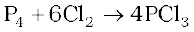
It is also obtained by the action of thionyl chloride with white phosphorus.
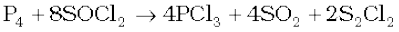
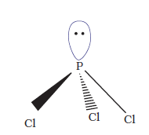
Properties
It is a colourless oily liquid and hydrolyses in the presence of moisture.
It reacts with organic compounds containing –OH group such as CH3COOH, C2H5OH.
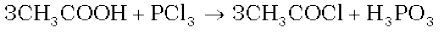
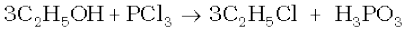
It has a pyramidal shape as shown, in which phosphorus is sp3 hybridised.
7.8.2 Phosphorus Pentachloride
Preparation
Phosphorus pentachloride is prepared by the reaction of white phosphorus with excess of dry chlorine.
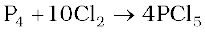
It can also be prepared by the action of SO2Cl2 on phosphorus.
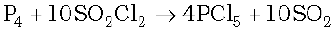
Properties
PCl5 is a yellowish white powder and in moist air, it hydrolyses to POCl3 and finally gets converted to phosphoric acid.
When heated, it sublimes but decomposes on stronger heating.
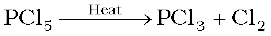
It reacts with organic compounds containing –OH group converting them to chloro derivatives.
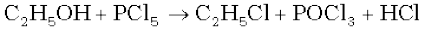
Finely divided metals on heating with PCl5 give corresponding chlorides.
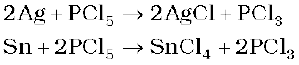
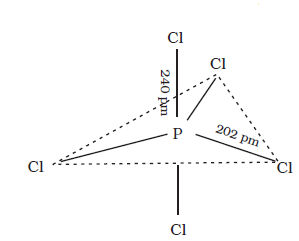
It is used in the synthesis of some organic compounds, e.g., C2H5Cl, CH3COCl.
In gaseous and liquid phases, it has a trigonal bipyramidal structure as shown. The three equatorial P–Cl bonds are equivalent, while the two axial bonds are longer than equatorial bonds. This is due to the fact that the axial bond pairs suffer more repulsion as compared to equatorial bond pairs.
In the solid state it exists as an ionic solid, [PCl4]+[PCl6]– in which the cation, [PCl4]+ is tetrahedral and the anion, [PCl6]–octahedral.
Example 7.7
Why does PCl3 fume in moisture ?
Solution
PCl3 hydrolyses in the presence of moisture giving fumes of HCl. PCl3 +3H2O→ H3PO3 +3HCl
Example 7.8
Are all the five bonds in PCl5 molecule equivalent? Justify your answer.
Solution
PCl5 has a trigonal bipyramidal structure and the three equatorial P-Cl bonds are equivalent, while the two axial bonds are different and longer than equatorial bonds.